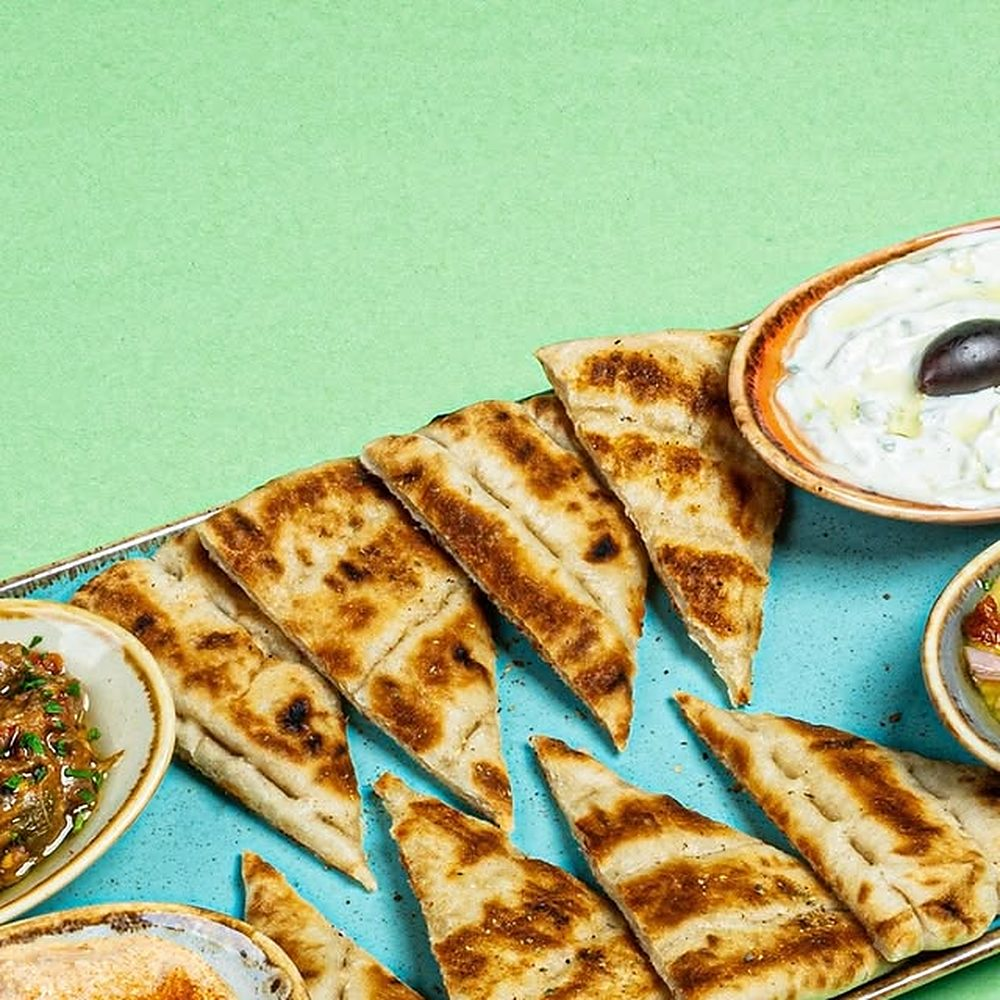
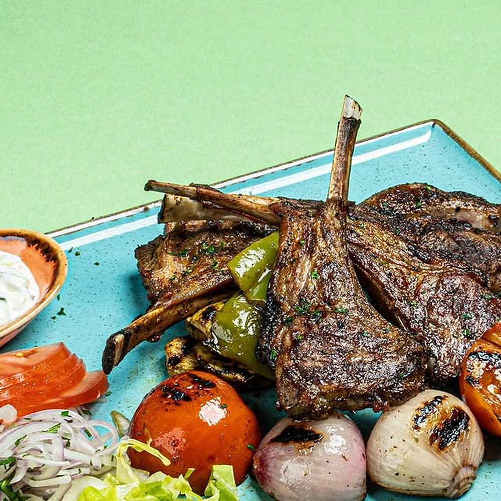
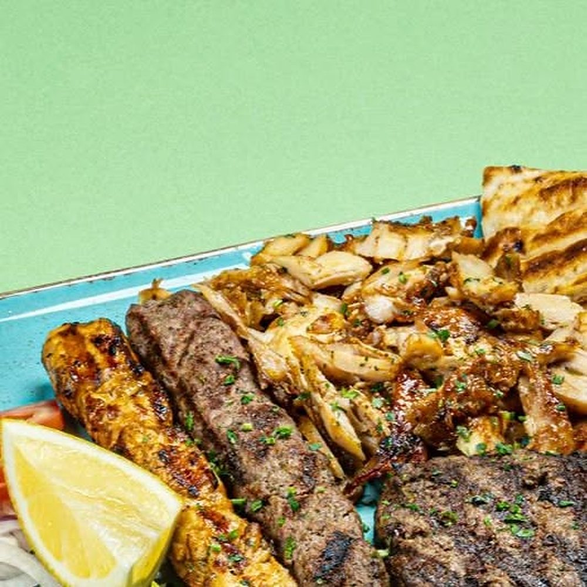
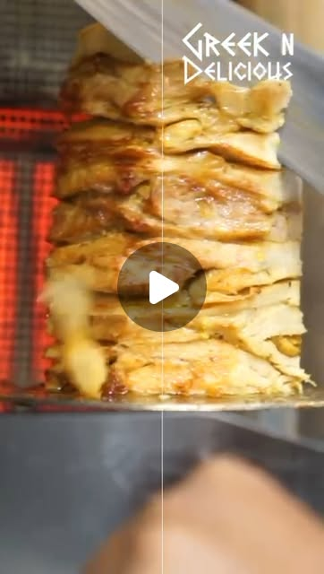

Your Instagram has not posted since 27 March, and your last dozen posts pull about five likes each.
Greek N Delicious is open in JLT, but the Instagram feed has not posted since 27 March 2026, and across the last twelve posts the median is about five likes. We read your public Instagram, set it against one Dubai Greek venue and against what has worked for the Greek restaurants we work with. We also checked the website listed for you, greekdelicious.ae, which returned a 403 error. This is what we found, the videos we would make, and the plan.
Prepared byJay Williams, Fusion Creative
Checked on12 October 2026
CoversSocial, website, a Dubai comparison, ideas, the plan
A menu that photographs well, and a feed that stopped in March.
Greek N Delicious has food that already looks right on camera and an Instagram audience of 2,422 people. The feed has not posted since 27 March 2026, and across the last twelve posts the median is about five likes. The website listed for the restaurant also returned 403 Forbidden in our checks on 10 and 11 October, including in a web browser. The feed and the website are where the work starts.
2,422
Instagram followers, from 102 posts
27 Mar
date of your last post. Nothing since
5
median likes across the last twelve posts
403
the error greekdelicious.ae returns, in a browser and in our checks
What is already strong, and worth building on
Food that photographs well: lamb chops with grilled tomato and pepper, pita with tzatziki and dips, and a mix grill platter with chicken gyros, kebab and lemon. These are the dishes we would film.
An audience to post to from day one: 2,422 followers on Instagram.
A spit and a grill to film: the gyros spit is already on your feed, close up, with your logo in the frame.
A menu that is already built. You do not need new dishes to start, you need a route from a video to a table or an order.
We would revive the feed with short video of the spit, the platters and your guests, posted on a plan, and give people who find you a working website with your menu, hours and a WhatsApp button to land on.
02 · What has worked for places like yours
Real people, in the venue, doing something worth watching.
Videos we planned for restaurants we work with, with licensed UAE crews filming to our brief. Each one gives people a reason to watch and a reason to visit.
70M
views on one reel for a Greek restaurant in Newcastle
3.5M
views on one reel for a Whitley Bay restaurant
+40%
weekly sales for that Greek restaurant, in the owner's own words
A reason beats a nice shot. A platter on its own rarely travels. The same platter with a question, a challenge or a story does.
The venue is the set. A licensed UAE crew would film in your kitchen and dining room to our shot list.
It is planned, not luck. We choose the formats before the crew arrives, and pick the mix for your menu and your week.
View counts from our own client dashboard, checked 10 October 2026. Sales figure from the owner's own review.
03 · Your website
The website listed for your restaurant returns a 403 error.
We requested greekdelicious.ae on 10 October 2026, and again in a web browser on 11 October. The https address returned 403 Forbidden. The http address redirected to www, which also returned 403. These are the things that follow from that, and what we would do.
What we saw
Why it matters
Fix
The address shows an error page
greekdelicious.ae returns 403 Forbidden, in our curl checks and in a web browser on 11 October.
A working site with the menu, hours, map and a WhatsApp button.
No booking or order route we could reach
With the site returning 403, we could not reach a booking, order or enquiry page.
Table bookings, collection orders and catering enquiries through WhatsApp, on every page.
Nothing to measure from
With no working site, no video can send people to a page that records what they did.
Conversion tracking on the new site, so every video reports what it brought in.



Your food, as photographed. These are the dishes we would film.
04 · Your social channels
Dormant since March, median five likes across the last twelve.
2,422
Instagram followers, from 102 posts
27 Mar
date of your last post. Nothing since
5
median likes across the last twelve posts
9
most likes on any of the last twelve posts
Our scrape of the public profile on 10 October showed:
The feed has stopped. The last post went up on 27 March 2026. A dormant feed means the audience you built stops hearing from you.
The food is the content. Your lamb chops, pita and dips and mix grill are the strongest pictures we found on the account.
Few reels. Four of your last twelve posts were reels. The short format is where new people find a restaurant.
A question in the caption. Your caption "Which one are you diving into first?" asks people to answer in the comments. That is the habit to keep.
What this means. The audience and the food are there, but the feed has gone quiet since March. Short video with your team and your guests in frame, posted on a plan, is how the restaurant reaches people in JLT who have not ordered yet.
Source: public profile instagram.com/greekanddelicious, checked 10 October 2026. Our scrape, not an independent count.
05 · One Dubai Greek venue we could confirm
The Greek venue on Instagram we could confirm in Dubai.
We checked Greek venues on Instagram in Dubai and kept only the ones whose location we could confirm from their own profile or posts. One qualified: Tonos, at Boulevard Plaza in Downtown. A web search found no other Tonos site.
Venue
What gets attention
Best recent post
Greek N Delicious JLT
The food, on your plates
9 likes, a question in the caption
Tonos Boulevard Plaza, Downtown
A welcome reel on finding the restaurant and its parking
Parking reel, 19 February 2025: 37 likes
What the numbers say
A practical reel gets the most likes. Tonos's parking reel drew 37 likes on 19 February 2025, the most of the posts we checked on its profile.
Its breakfast reel drew less. A breakfast reel from 20 May 2025 drew 17 likes and 3 comments.
Sources: public Instagram profile and posts of @tonos_uae, and a web search for Tonos in Dubai, checked 10 and 11 October 2026.
06 · What is working in your market
Two frames from your own feed, and what they are missing.
Both show the right subject. Neither gives the viewer a reason to act, which is the part we would add.
Your food on your own feedGreek N Delicious: chicken gyros with fries and pita. The dish is right. Nobody on screen tells you to order it.

Your spit, on your own reelGreek N Delicious: the spit, filmed close. No face, no line, no reason to come this week.
1
People on screen
Your team at the spit, your regulars, the office crowd at lunch, with permission. Skits and challenges, filmed at the counter and the tables.
2
The spit is the star
Gyros carved to order, skewers on the grill, platters built in front of the camera. It is the thing a photo cannot show.
3
A reason to come this week
A platter from the menu, a group order for the office, a weekly question. Every video ends with one and a WhatsApp link.
07 · Twelve videos we would make
Built from your spit, your platters and your caption question.
Every concept uses something you already have: the spit, the platters, the team and the question in your captions. Six are built to bring people in this week. Six are built to keep your Instagram growing.
Videos that bring people in
6 concepts
Skit
The caption question, answered on camera
"Which one are you diving into first? We asked the table."
Guests answer on camera, one platter for each answer, and the team at the spit reacts.
Why: turns a question you already ask into a video people reply to.
Challenge
The platter clock
"Can two people finish the mix grill platter in fifteen minutes?"
Two regulars, a timer on screen, the mix grill in front of them. Honest faces, one slows down.
Why: a challenge gives the viewer a reason to watch to the end.
Challenge
Name the dips
"Name all of these without looking at the menu."
The pita and dips in front of a table of regulars. One wrong answer, one near miss.
Why: turns the food you already photograph into a format people finish.
Local
The JLT lunch test
"Office to gyros to desk. Can we do it in 40 minutes?"
One office worker, timed from the lift to the lift, with the WhatsApp order sent on the way down.
Why: shows the order route for people who work nearby.
Team
Ask the team
"Ask us anything about our gyros. One take, ten questions."
The team answers the questions customers ask most, at the counter, in one take.
Why: answers the questions that stop people ordering for the first time.
Orders
The office order
"POV: your office ordered Greek for twelve."
A WhatsApp order coming in, the platters packed, the delivery going out.
Why: sells group and office orders.
Organic that builds the audience
6 concepts
Series
The first carve of the day
"The first carve of the day, at the spit."
The gyros being stacked, the first carve, the first pita. Thirty seconds, once a week.
Why: the spit reel already on your feed, made into a series people look for.
Team
The person behind the counter
"Who makes your gyros. Twenty seconds each."
One team member at a time, at the spit and at the grill, name on screen.
Why: people order from people.
Dish
The chicken gyros platter
"Chicken gyros, fries and pita, built in one take."
The chicken gyros platter built in one take: fries, salad, pita, tzatziki, gyros.
Why: the dish already on your feed, shown properly every week.
Guests
Where are you from?
"Asking our guests where they are visiting from."
Quick answers from guests on the way out, with the restaurant behind them.
Why: shows real people in the room and a restaurant that belongs to the neighbourhood.
Question
The weekly vote
"Which one are you diving into first?"
Your caption question turned into a weekly pick, filmed at the counter, with the answer at the end.
Why: a question people can answer in the comments.
Orders
Group orders, filmed
"Greek for twelve, in one WhatsApp message."
A group order arriving on WhatsApp, the platters packed, the delivery going out.
Why: sells the group orders a dine-in video cannot show.
08 · Your bookings and orders, direct
Direct orders and bookings need a working website, and delivery apps take a cut of each order they carry.
The website returns 403, so we could not find a working booking, order or enquiry route. Anyone who looks for you online has no direct page to use.
403
what greekdelicious.ae returns to visitors, checked 10 and 11 October
17 to 18%
Talabat's average commission from restaurants, group-wide, Q1 2025
85%
of UAE residents prefer to use WhatsApp to deal with companies
If you list on a delivery app, the app takes a commission on every order. An analyst note on Talabat's Q1 2025 results puts its average commission from restaurants at 17% to 18%. That is a group-wide figure across its markets, not a UAE rate, and it sits before card fees, advertising and any discounts a restaurant funds. Apps also bring new customers, so we would not tell you to stay off them. The orders worth taking direct are the ones from people who already know you.
What the site would be: an address that loads, the menu, the hours you set, a map, table bookings and collection orders through a WhatsApp button on every page with a pre-filled message, and conversion tracking so each video reports what it brought in. Built once and handed over to you.
Sources: greekdelicious.ae, requested on 10 and 11 October 2026 (HTTP 403). FAB Securities, Talabat Q1 2025 results note, 13 May 2025. Zbooni with YouGov, 1,000 UAE residents, published 12 February 2024.
09 · The plan
A plan built around the food you already have and one filming day.
Week 1
Plan and set up
A call to pick the first twelve videos and agree the site pages. We write the shot list and brief for a licensed UAE crew, and start the site build.
Week 2
One shoot day
A licensed UAE crew would film at Greek N Delicious to our shot list: the spit, the platters and the team, in one day. We direct remotely from Newcastle.
Weeks 2 to 3
Edit and deliver
We edit and caption the videos and hand them over, ready to post to Instagram and TikTok, each one ending with a reason to order this week. The new site goes live with the menu, hours and WhatsApp.
Handover
Yours to keep
You keep every video and the site. We show your team how to post the batch on a plan, so the feed stays steady after the shoot.
What the shoot gives you: filming at Greek N Delicious by a licensed UAE crew to our brief, a batch of edited short videos ready to post, and a working site with the menu, hours and a WhatsApp button. You keep every video.
10 · Who we are, and next steps
A Newcastle team that plans the videos and edits them.
We plan every video around what brings people in, a licensed UAE crew would film to our shot list in your venue, and we edit, caption and deliver from our studio. We measure what matters to you: covers, orders and people through the door, not likes.
70M
views on one reel for a Greek restaurant in Newcastle
3.5M
views on one reel for a Whitley Bay restaurant
+40%
weekly sales for that Greek restaurant, in the owner's own words
Jay Williams and Anya Davey, the founders of Fusion Creative. I plan the videos from Newcastle, and a licensed UAE crew would film to our shot list. I would be the person you call about the plan. Our team of editors turns every shoot day into finished videos, and a licensed UAE crew would film each one to our shot list.
Next steps
Reply on Instagram or WhatsApp and tell us the best day to film.
We send the shot list for the shoot day and a first look at the site.

Dormant since March, median five likes across the last twelve.
Our scrape of the public profile on 10 October showed:
What this means. The audience and the food are there, but the feed has gone quiet since March. Short video with your team and your guests in frame, posted on a plan, is how the restaurant reaches people in JLT who have not ordered yet.
Source: public profile instagram.com/greekanddelicious, checked 10 October 2026. Our scrape, not an independent count.